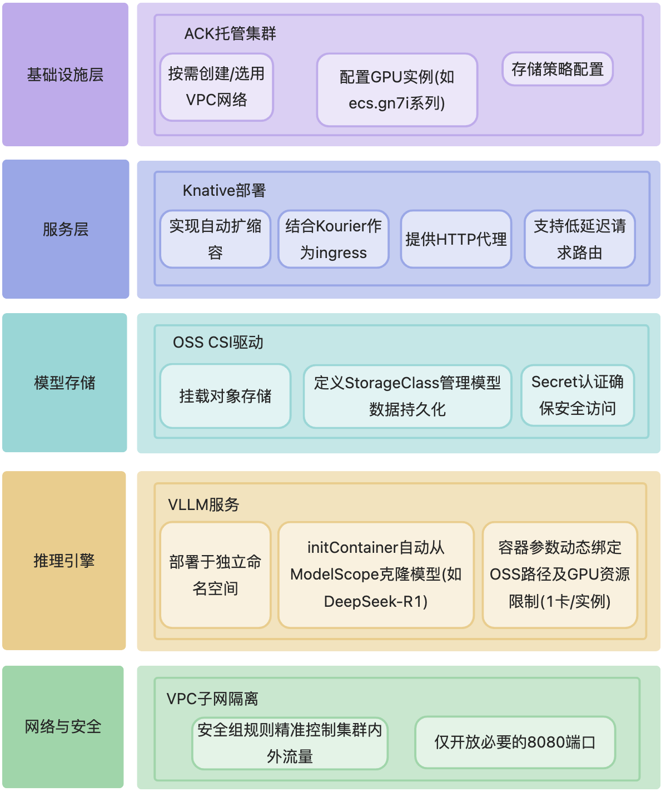
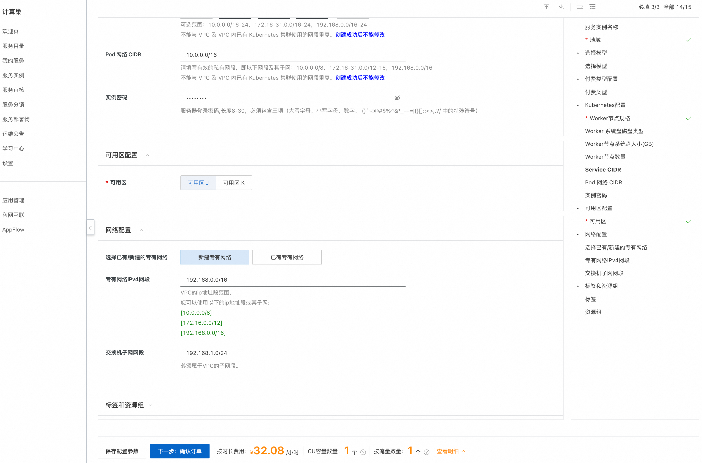
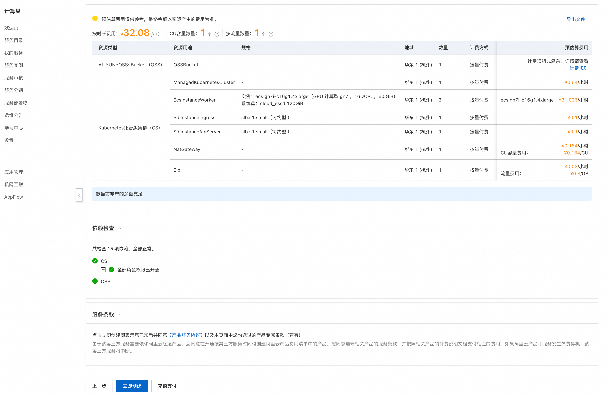
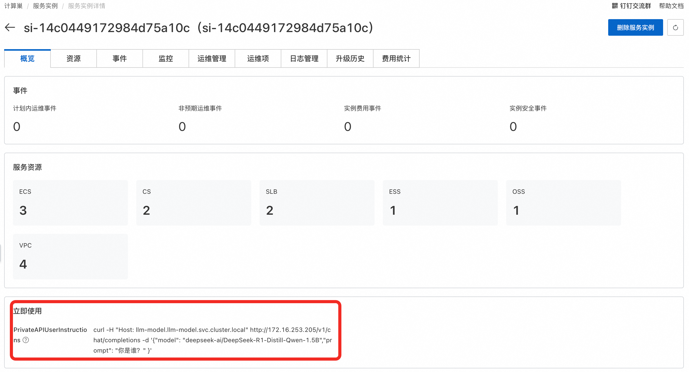
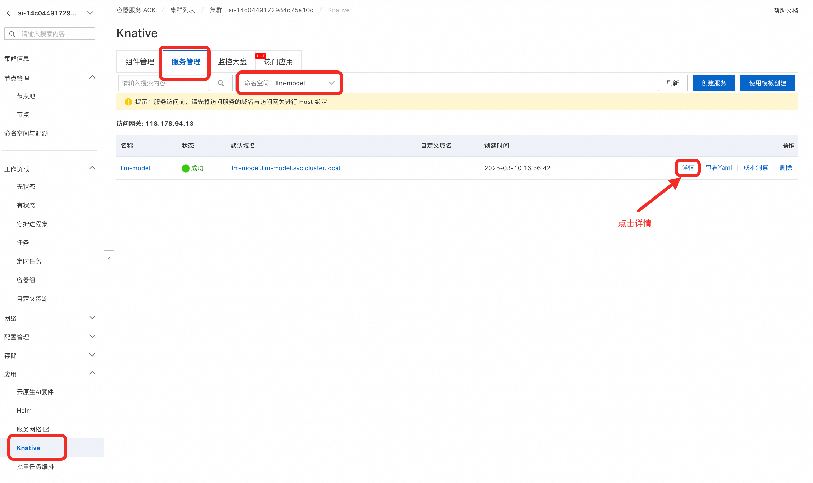
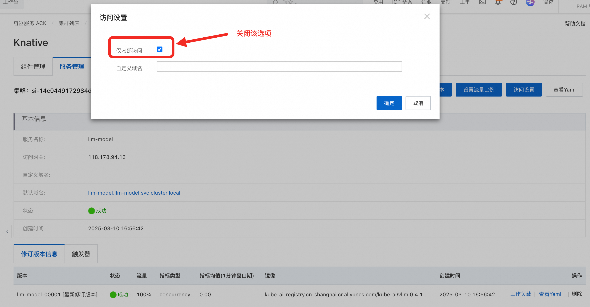
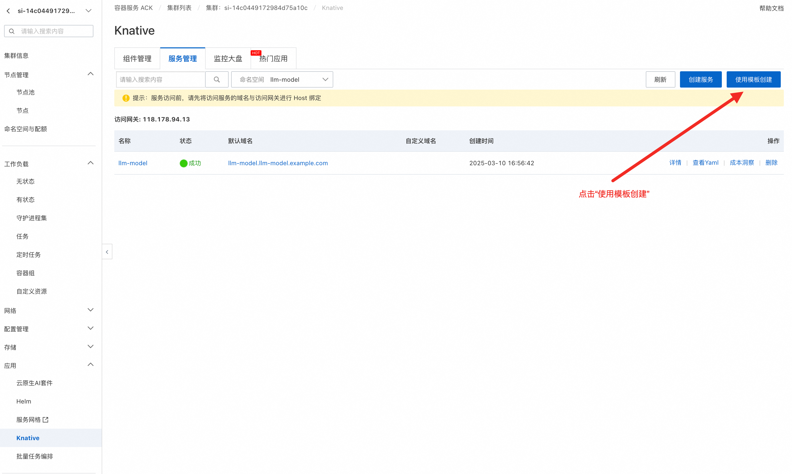
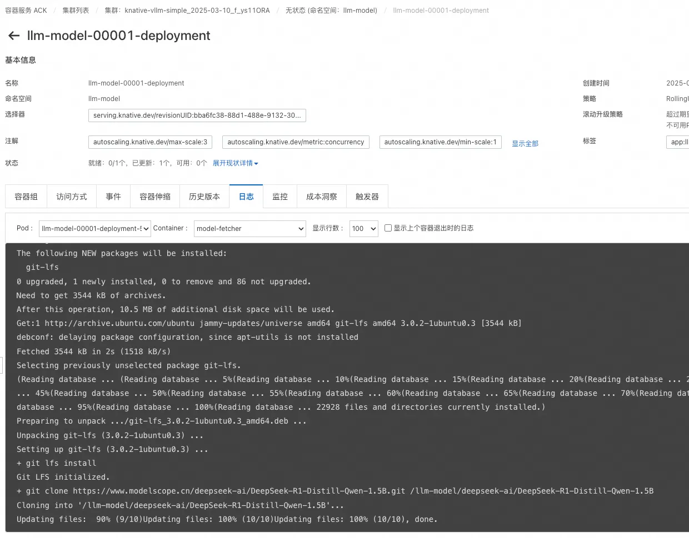
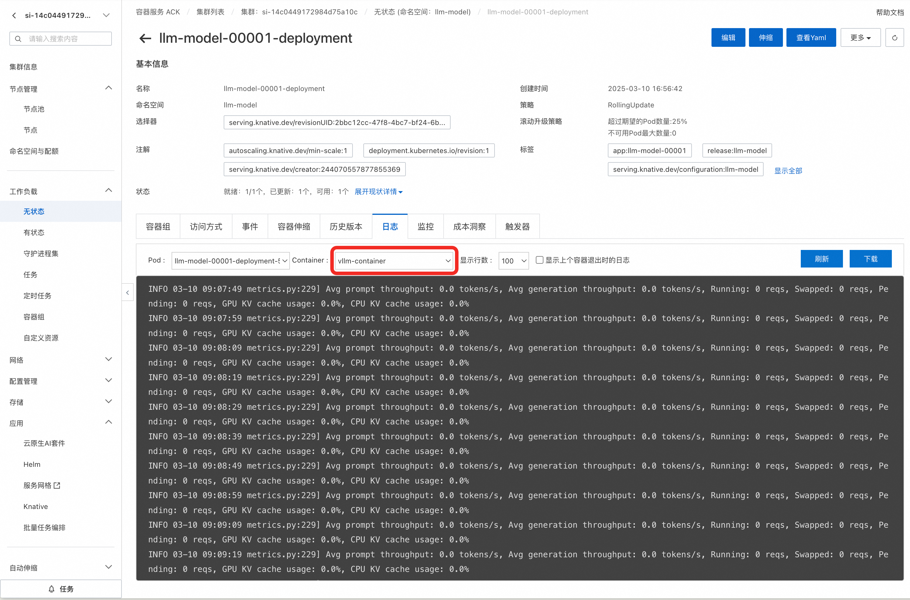

基于ACK集群的vllm大模型部署文档
部署说明
本服务基于Knative与VLLM打造的大模型Serverless部署方案，提供开箱即用的高性能推理服务。通过Knative实现自动扩缩容与弹性资源管理，结合VLLM引擎的并行化推理能力，可在秒级启动高并发大模型服务，资源利用率提升数倍。支持主流LLM（如Qwen、DeepSeek等），一键配置即可享受低延迟、高吞吐的推理体验。
开发者无需关心底层容器编排与资源调优，仅需几行YAML即可部署模型，适配AI应用开发、在线服务等场景。同时支持模型动态扩缩与QPS自适应调度，大幅降低大模型落地成本。
Knative是一款基于Kubernetes集群的开源Serverless框架，负责管理Serverless工作负载，提供了应用部署、多版本管理等能力，且支持强大灵活的扩缩容能力。详情请参考：Knative文档。
本服务以快速在ACK集群中部署deepseek-ai/DeepSeek-R1-Distill-Qwen-1.5B为例，展示如何部署模型。如果需要部署其他模型，请参考该文档的更换模型一节。
整体架构

计费说明
本服务在阿里云上的费用主要涉及： * 所选GPU云服务器的规格 * 节点数量 * 磁盘容量 * 公网带宽 计费方式：按量付费（小时）或包年包月 预估费用在创建实例时可实时看到。
RAM账号所需权限
部署Knative+vllm大模型服务实例，需要对部分阿里云资源进行访问和创建操作。因此您的账号需要包含如下资源的权限。
| 权限策略名称 | 备注 |
|---|---|
| AliyunECSFullAccess | 管理云服务器服务（ECS）的权限 |
| AliyunVPCFullAccess | 管理专有网络（VPC）的权限 |
| AliyunROSFullAccess | 管理资源编排服务（ROS）的权限 |
| AliyunCSFullAccess | 管理容器服务（CS）的权限 |
| AliyunComputeNestUserFullAccess | 管理计算巢服务（ComputeNest）的用户侧权限 |
| AliyunOSSFullAccess | 管理网络对象存储服务（OSS）的权限 |
部署流程
-
单击部署链接。根据界面提示填写参数，可以看到对应询价明细，确认参数后点击下一步：确认订单。

-
点击下一步：确认订单后可以也看到价格预览，随后点击立即部署，等待部署完成。

-
等待部署完成后就可以开始使用服务，进入服务实例详情查看如何私网访问指导。

使用说明
私网API访问
- 在和服务器同一VPC内的ECS中访问概览页的私网API地址。访问示例如下：
shell curl -H "Host: llm-model.llm-model.svc.cluster.local" http://${PrivateIp}/api/generate -d '{ "model": "deepseek-ai/DeepSeek-R1-Distill-Qwen-1.5B", "prompt": "你是谁？" }' - 如果想通过公网访问API地址，需要在Kourier页面关闭仅内网访问，便能通过公网访问API地址。关闭方式：
- 进入集群管理页面，点击左侧导航栏的应用，点击Knative，进入Knative页面。
- 点击服务管理，选择llm-model命名空间，然后可以看到llm-model服务。
- 点击详情，取消勾选仅内部访问，然后点击确定。
- 默认域名自动修改为 llm-model.llm-model.example.com。随后通过示例进行访问。其中GatewayIp采用页面基本信息中的访问网关中的ip。


访问示例如下：shell curl -H "Host: llm-model.llm-model.example.com" http://${GatewayIp}/api/generate -d '{ "model": "deepseek-ai/DeepSeek-R1-Distill-Qwen-1.5B", "prompt": "你是谁？" }'
更换模型
服务中采用的是deepseek-ai/DeepSeek-R1-Distill-Qwen-1.5B模型，如果想更换其他模型，可以参考如下方法： 以deepseek-ai/DeepSeek-R1-Distill-Qwen-7B为例：
- 进入ACK集群
- 创建PVC【可选】，该服务采用使用 StorageClass + 动态 PVC的方式，所以需要对于每个不同的模型，可以创建自己的PersistentVolumeClaim，动态申请 PV。
主要的优点是，每个模型获得独立的存储路径，逻辑隔离，并且方便后续扩容或调整存储策略。若是不创建则可以直接采用已有的PVC：llm-model，后续示例代码中采用已创建的PVC: llm-model。
yaml apiVersion: v1 kind: PersistentVolumeClaim metadata: name: my-llm-model # 此处可以替换为实际的名称，并在实际部署中指定该PVC spec: accessModes: [ "ReadWriteMany" ] storageClassName: llm-model resources: requests: storage: 200Gi - 选择应用
Knative，然后点击服务管理，再点击右上角使用模板创建，输入如下yaml。
- ${ModelName}可以更换为指定的model，例如此处可以替换为deepseek-ai/DeepSeek-R1-Distill-Qwen-7B，这个名字可以从modelscope中查找。
- vllm的部署参数也需要根据模型与GPU显存进行调整，例如deepseek-ai/DeepSeek-R1-Distill-Qwen-7B采用的--max-model-len为16384�。具体的参数可以在其官方github或其他开发者的部署文档找到，也可以自行测试验证。--served-model-name，指定服务名称。--model 指定模型路径。
```yaml
apiVersion: serving.knative.dev/v1
kind: Service
metadata:
labels:
release: llm-model
name: llm-model
namespace: llm-model
spec:
template:
metadata:
annotations:
autoscaling.knative.dev/min-scale: "1"
labels:
release: llm-model
spec:
initContainers:
- name: model-fetcher
image: kube-ai-registry.cn-shanghai.cr.aliyuncs.com/kube-ai/vllm:0.4.1
command:
- bash
args:
- -c
- |
# 检查克隆的目录是否已经存在
if [ ! -d "/llm-model/${ModelName}/.git" ]; then
echo "Cloning the repository"
# 考虑将模型文件打包设置为部署物
set -ex
apt-get update
apt-get install -y software-properties-common
add-apt-repository -y ppa:git-core/ppa
apt-get update
apt-get install -y git-lfs
git lfs install
git clone https://www.modelscope.cn/${ModelName}.git /llm-model/${ModelName}
else
echo "Repository already cloned."
fi
volumeMounts: - name: llm-model mountPath: /llm-model/${ModelName} containers: - name: vllm-container command: - sh - -c - python3 -m vllm.entrypoints.openai.api_server --port 8080 --trust-remote-code --served-model-name deepseek --model /llm-model/deepseek-ai/DeepSeek-R1-Distill-Qwen-1.5B --gpu-memory-utilization 0.95 --max-model-len 32768 --enable-chunked-prefill --enforce-eager image: kube-ai-registry.cn-shanghai.cr.aliyuncs.com/kube-ai/vllm:0.4.1 imagePullPolicy: IfNotPresent readinessProbe: tcpSocket: port: 8080 initialDelaySeconds: 5 periodSeconds: 5 resources: requests: cpu: "8" memory: 16Gi nvidia.com/gpu: "1" limits: nvidia.com/gpu: "1" volumeMounts: - mountPath: /llm-model/${ModelName} # 模型所在的路径 name: llm-model volumes: - name: llm-model persistentVolumeClaim: claimName: llm-model4. 当这里显示running表示部署成功，这里采用的Kourier作为网关，默认仅支持私网访问，如果需要公网访问则需要打开开关。 如何进行私网访问： 在和服务器同一VPC内的ECS中访问概览页的私网API地址。访问示例如下：bash curl -H "Host: llm-model.llm-model.svc.cluster.local" http://${PrivateIp}/api/generate -d '{ "model": "deepseek", "prompt": "你是谁？" }' ``` 如果想通过公网访问API地址，需要在Kourier页面关闭仅内网访问，便能通过公网访问API地址。关闭方式： a. 进入集群管理页面，点击左侧导航栏的应用，点击Knative，进入Knative页面。 b. 点击服务管理，选择llm-model命名空间，然后可以看到llm-model服务。 c. 点击详情，取消勾选仅内部访问，然后点击确定。 d. 默认域名自动修改为 llm-model.llm-model.example.com。随后通过示例进行访问。其中GatewayIp采用页面基本信息中的访问网关中的ip。
进阶教程
-
配置弹性扩缩容
Knative提供灵活的弹性扩缩容功能，您可以参考该文档设置对应的扩缩容配置：基于流量请求数实现服务自动扩缩容, 需要注意，目前每个pod分配了一张GPU，当通过扩容得到的pod数量超过GPU数量时将会导致其余pod扩容失败。可以创建一个弹性gpu节点池，当新创建的pod 所需要gpu资源不够，处于pending的时候，通过gpu节点池弹出来新的节点供pod使用， 具体参考文档：启用节点自动伸缩。
-
自定义配置Fluid实现模型加速
服务本身默认配置了Fluid，但是对于一些需要存储空间更高的模型，需要更大的缓存空间，具体可以参考文档修改Fluid的配置参数：Fluid。 经测试，采用Fluid的加速，根据缓存大小，模型加载速度可以缩短至50%，在应对一些弹性伸缩的场景下，可以快速加载模型，显著提高性能。如下所示，其中fluid-oss-secret已经创建好，可以仅修改具体的BucketName、ModelName和具体的JindoRuntime参数：
apiVersion: data.fluid.io/v1alpha1
kind: Dataset
metadata:
name: llm-model
namespace: llm-model
spec:
mounts:
- mountPoint: oss://${BucketName}/llm-model/${ModelName} # 请替换为实际的模型存储地址。
options:
fs.oss.endpoint: oss-${RegionId}-internal.aliyuncs.com # 请替换为实际的OSS endpoint地址。
name: models
path: "/"
encryptOptions:
- name: fs.oss.accessKeyId
valueFrom:
secretKeyRef:
name: fluid-oss-secret
key: fs.oss.accessKeyId
- name: fs.oss.accessKeySecret
valueFrom:
secretKeyRef:
name: fluid-oss-secret
key: fs.oss.accessKeySecret
---
apiVersion: data.fluid.io/v1alpha1
kind: JindoRuntime
metadata:
name: llm-model # 需要与Dataset名称保持一致。
namespace: llm-model
spec:
replicas: 3
tieredstore:
levels:
- mediumtype: MEM # 使用内存缓存数据。
volumeType: emptyDir
path: /dev/shm
quota: 10Gi # 单个分布式缓存Worker副本所能提供的缓存容量。
high: "0.95"
low: "0.7"
fuse:
resources:
requests:
memory: 2Gi
properties:
fs.oss.download.thread.concurrency: "200"
fs.oss.read.buffer.size: "8388608"
fs.oss.read.readahead.max.buffer.count: "200"
fs.oss.read.sequence.ambiguity.range: "2147483647"
Benchmark
本服务基采用vllm自带的benchmark进行测试，采用的压测数据集：https://www.modelscope.cn/datasets/gliang1001/ShareGPT_V3_unfiltered_cleaned_split/files， 压测脚本可以参考如下：
apiVersion: apps/v1
kind: Deployment
metadata:
name: vllm-benchmark
namespace: llm-model
labels:
app: vllm-benchmark
spec:
replicas: 1
selector:
matchLabels:
app: vllm-benchmark
template:
metadata:
labels:
app: vllm-benchmark
spec:
nodeName: cn-hangzhou.192.168.1.84
volumes:
- name: llm-model
persistentVolumeClaim:
claimName: llm-model
containers:
- name: vllm-benchmark
image: kube-ai-registry.cn-shanghai.cr.aliyuncs.com/kube-ai/vllm-benchmark:v1
command:
- "sh"
- "-c"
- "sleep inf"
volumeMounts:
- mountPath: /mnt/models
name: llm-model
如果要对其他部署模型进行压测请修改其中的参数，如--served-model-name等。如果测试数据没有在挂载目录中，进入容器后可以安装git lfs并下载测试数据。
kubectl exec -it <pod-name> -- bash
# 执行压测 input_length=1024,tp=8,output_lenght=6,qps=2,num_prompts=200
python3 /root/vllm/benchmarks/benchmark_serving.py \
--backend vllm \
--model /mnt/models/deepseek-ai/DeepSeek-R1-Distill-Qwen-1.5B \
--served-model-name deepseek-ai/DeepSeek-R1-Distill-Qwen-1.5B \
--trust-remote-code \
--dataset-name sharegpt \
--dataset-path /mnt/models/deepseek-ai/DeepSeek-R1-Distill-Qwen-1.5B/ShareGPT_V3_unfiltered_cleaned_split/ShareGPT_V3_unfiltered_cleaned_split.json \
--sonnet-input-len 1024 \
--sonnet-output-len 6 \
--sonnet-prefix-len 50 \
--num-prompts 200 \
--request-rate 1 \
--host llm-model.llm-model.svc.cluster.local \
--port 80 \
--endpoint /v1/completions \
--save-result \
2>&1 | tee benchmark_serving.txt
采用默认配置（3节点、节点采用ecs.gn7i-c16g1.4xlarge机型（16vcpu，60GB内存）、每个节点一张A10）最终得到的测试结果如下：
Traffic request rate: 1.0
Burstiness factor: 1.0 (Poisson process)
Maximum request concurrency: None
100%|██████████| 200/200 [03:20<00:00, 1.00s/it]
============ Serving Benchmark Result ============
Successful requests: 200
Benchmark duration (s): 200.04
Total input tokens: 43280
Total generated tokens: 43689
Request throughput (req/s): 1.00
Output token throughput (tok/s): 218.40
Total Token throughput (tok/s): 434.76
---------------Time to First Token----------------
Mean TTFT (ms): 27.03
Median TTFT (ms): 23.98
P99 TTFT (ms): 54.77
-----Time per Output Token (excl. 1st token)------
Mean TPOT (ms): 10.52
Median TPOT (ms): 10.50
P99 TPOT (ms): 11.66
---------------Inter-token Latency----------------
Mean ITL (ms): 10.50
Median ITL (ms): 10.43
P99 ITL (ms): 11.69
==================================================
QA
Q: 很长时间都没有部署成功 A: 可能是模型太大，需要下载时间比较久。可以查看model-fetcher这个container的logs判断是否已经下载完成。

Q：vllm参数设置不对导致模型运行失败 A：由于vllm的参数与模型、GPU有关，所以需要根据实际情况指定参数，报错信息可以查看vllm-container这个容器的logs。
